Election results: Fedora 21 - 2014
Overview
Below are the results of the election Fedora 21 from 2014.
| Name | Votes | Image | ||
|---|---|---|---|---|
| 1 | Beautiful Colourful houses in The Netherlands | 49 |

|
Author: Skitterphoto License: CC0 |
| 2 | Abstract Lines | 42 |

|
Author: tonet666p License: CC0 |
| 3 | Machu Picchu Panorama | 38 | 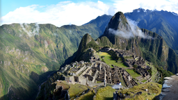 |
Author: Jared Smith License: CC-BY-SA |
| 4 | Corn | 36 | 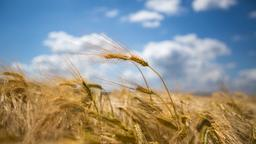 |
Author: Harald Hoyer License: CC-BY-SA |
| 5 | Laguna Del Inca | 32 | 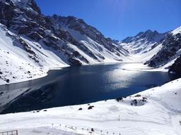 |
Author: cleide14 License: CC-BY-SA |
| 6 | Water drop close up | 32 |

|
Author: Skitterphoto License: CC0 |
| 7 | Small river shot in beatifull High Dynamic Range with great colours | 30 |

|
Author: Skitterphoto License: CC0 |
| 8 | Miami Nightlife | 29 |

|
Author: Jared Smith License: CC-BY-SA |
| 9 | Seychelles Dream | 28 | 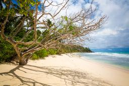 |
Author: Harald Hoyer License: CC-BY-SA |
| 10 | dandelion | 28 |

|
Author: andyfitz License: CC-BY-SA |
| 11 | Baatara Sinkhole | 28 | 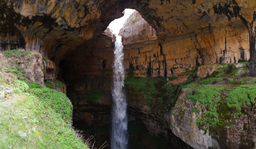 |
Author: Jonathan Dieter License: CC-BY-SA |
| 12 | Gardalini | 28 |

|
Author: jurankdankkal License: CC-BY-SA |
| 13 | Colza | 27 | 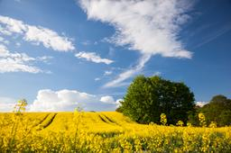 |
Author: harald License: CC-BY-SA |
| 14 | Florida Coast | 26 | 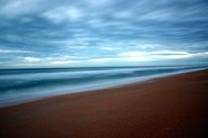 |
Author: afsilva License: CC-BY-SA |
| 15 | Balloons Aloft | 26 |

|
Author: stevenpink License: Free Art |
| 16 | Dew on grass | 25 | 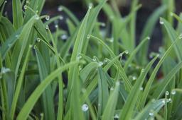 |
Author: rajeeshknambiar License: CC-BY-SA |
| 17 | Blue Windmill | 25 |
Author: jurankdankkal License: CC-BY |
|
| 18 | La Pyramide du Louvre | 24 |

|
Author: nickolsen License: CC-BY-SA |
| 19 | Paddy field on Bali | 23 |

|
Author: Skitterphoto License: CC0 |
| 20 | Carved Into Stone | 22 |

|
Author: gnokii License: CC-BY |
| 21 | Series of Tubes | 22 |

|
Author: Jared Smith License: CC-BY-SA |
| 22 | Community Boating | 21 |
Author: Peter Jones License: CC-BY-SA |
|
| 23 | Grass in the Morning | 20 | 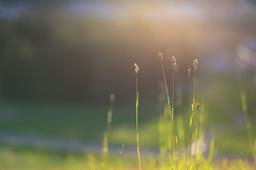 |
Author: andyfitz License: CC-BY-SA |
| 24 | Nyanagharo Rain | 19 |

|
Author: nyanagharo License: CC-BY-SA |
| 25 | Beautiful Path | 18 |

|
Author: Andreas Nieto Porras License: CC-BY-SA |
| 26 | Frangipani | 18 | 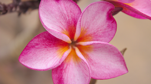 |
Author: gnokii License: CC-BY |
| 27 | Mushroom World | 18 |

|
Author: Harald Hoyer License: CC-BY-SA |
| 28 | green culm | 17 |

|
Author: eworm License: CC-BY-SA |
| 29 | Lismore Lighthouse | 17 |

|
Author: sclark License: CC-BY-SA |
| 30 | Waves Upon Shore | 17 | 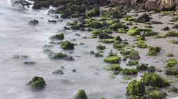 |
Author: stevenpink License: Free Art |
| 31 | Špilberk | 17 | 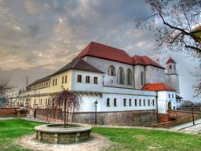 |
Author: El Coleccionista de Instantes License: CC-BY-SA |
| 32 | Sunset at Pacific | 16 |

|
Author: kushal License: CC-BY-SA |
| 33 | Dandelion and sluice | 16 |

|
Author: fabiand License: CC-BY-SA |
| 34 | Chameleon | 15 |

|
Author: akkias License: Free Art |
| 35 | Yellow Moon | 15 |

|
Author: jamesnz License: CC-BY-SA |
| 36 | Oriental Garden Lizard | 14 |

|
Author: rajeeshknambiar License: CC-BY-SA |
| 37 | Teatro Municipal | 14 |
Author: cleide14 License: CC-BY-SA |
|
| 38 | Giant Blue | 14 | 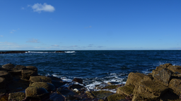 |
Author: mondoni License: CC-BY-SA |
| 39 | Frozen Lake UHD | 14 |

|
Author: arehtykitna License: CC-BY-SA |
| 40 | Sunset on English Bay | 14 | 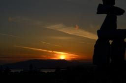 |
Author: Luya Tshimbalanga License: CC-BY-SA |
| 41 | Lighthouse day off | 14 |

|
Author: Gerard Ryan License: CC-BY-SA |
| 42 | Cusco fountain | 13 |

|
Author: wolnei License: CC-BY-SA |
| 43 | Ocean Infinity | 13 |

|
Author: rkratky License: CC-BY-SA |
| 44 | Sunflower | 13 | 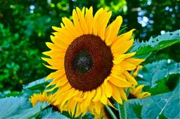 |
Author: borigori License: CC-BY-SA |
| 45 | Port Aransas | 12 | 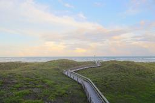 |
Author: mhayden License: CC-BY |
| 46 | Memories of Leipzig | 12 | 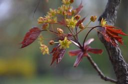 |
Author: pingou License: CC-BY |
| 47 | French view | 12 | 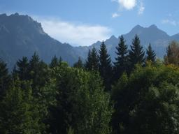 |
Author: davep License: CC0 |
| 48 | Zakim 14 | 11 |

|
Author: Peter Jones License: CC-BY-SA |
| 49 | Serenity | 11 |

|
Author: nhira License: CC-BY-SA |
| 50 | Macro Stamen | 11 |

|
Author: stevenpink License: Free Art |
| 51 | Spring Morning | 11 |

|
Author: afsilva License: CC-BY-SA |
| 52 | Light | 11 | 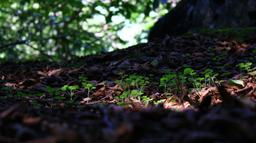 |
Author: Hapoofesgeli License: CC0 |
| 53 | Bridge Landscape Stitch | 11 | 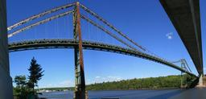 |
Author: Andrewman327 License: CC-BY |
| 54 | Community Boating 2 | 10 |
Author: Peter Jones License: CC-BY-SA |
|
| 55 | Here comes the rain | 10 |

|
Author: arehtykitna License: CC-BY-SA |
| 56 | saras | 10 | 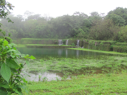 |
Author: gnovi License: CC-BY-SA |
| 57 | Cat on the wall | 9 | 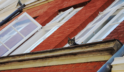 |
Author: mrunge License: CC-BY-SA |
| 58 | Morro de São Paulo | 9 | 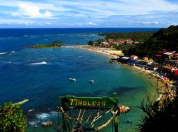 |
Author: cleide14 License: CC-BY-SA |
| 59 | Golden Moon | 8 |

|
Author: gnovi License: CC-BY-SA |
| 60 | bare branches | 8 | 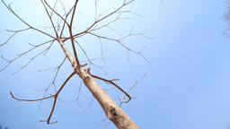 |
Author: haggerhermy License: CC-BY-SA |
| 61 | Loch Linnhe Morning | 8 |

|
Author: sclark License: CC-BY-SA |
| 62 | sunny | 8 | 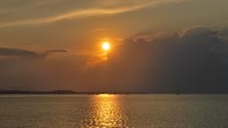 |
Author: comzeradd License: CC-BY-SA |
| 63 | Farellones | 8 |

|
Author: cleide14 License: CC-BY-SA |
| 64 | Mingo | 7 | 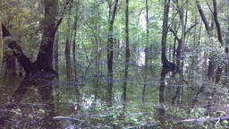 |
Author: donaldedwardwinslow License: Free Art |
| 65 | Naniboujou | 7 |

|
Author: nhira License: CC-BY-SA |
| 66 | Le couple | 6 | 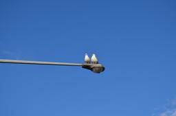 |
Author: luya License: CC-BY-SA |
| 67 | river-in-motion | 6 |

|
Author: kevin License: CC-BY-SA |
| 68 | XO keyboard | 6 |

|
Author: Luya Tshimbalanga License: CC-BY-SA |
| 69 | Full moon of Robson Square | 6 |

|
Author: Luya Tshimbalanga License: CC-BY-SA |
| 70 | Lonely Rock | 6 |

|
Author: nhira License: CC-BY-SA |
| 71 | Museu de Arte Contemporânea de Niterói | 5 | 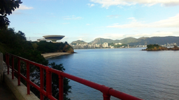 |
Author: skytux License: CC-BY-SA |
| 72 | Floating City | 5 |

|
Author: Luya Tshimbalanga License: CC-BY-SA |
| 73 | Flower after the rain | 5 | 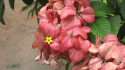 |
Author: Tom "spot" Callaway License: CC-BY-SA |
| 74 | Cusco city vision | 4 |

|
Author: wolnei License: CC-BY-SA |
| 75 | Vietnamese Garden | 4 |

|
Author: jamielinux License: CC0 |
| 76 | Leftovers | 4 |

|
Author: Gerard Ryan License: CC-BY-SA |
| 77 | Purple Orchid | 4 | 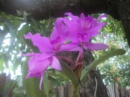 |
Author: williamjmorenor License: CC-BY |
| 78 | Sea of Bincmds | 4 | 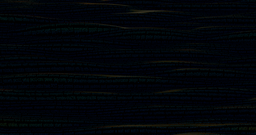 |
Author: zcat License: CC0 |
| 79 | Witness | 4 | 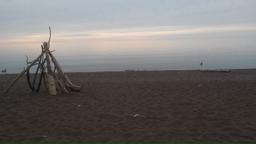 |
Author: nhira License: CC-BY-SA |
| 80 | Porto Alegre seen from the other side of Guaíba River - Brazil | 4 | 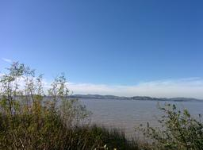 |
Author: filiperosset License: CC-BY-SA |
| 81 | The Lowry in Salford | 3 |

|
Author: sic License: CC-BY-SA |
| 82 | A bed of grass | 3 | 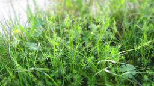 |
Author: fabiand License: CC-BY-SA |
| 83 | Abandonned Altantide | 1 |

|
Author: Luya Tshimbalanga License: CC-BY-SA |
{kind=link}
{kind=link}
{kind=link}
{kind=link}
{kind=link}
{kind=link}
{kind=link}
{kind=link}
{kind=link}
{kind=link}
{kind=link}
{kind=link}
{kind=link}
{kind=link}
{kind=link}
{kind=link}
{kind=link}
{kind=link}
{kind=link}
{kind=link}
{kind=link}
{kind=link}
{kind=link}
{kind=link}
{kind=link}
{kind=link}
{kind=link}
{kind=link}
{kind=link}
{kind=link}
{kind=link}
{kind=link}
{kind=link}
{kind=link}
{kind=link}
{kind=link}
{kind=link}
{kind=link}